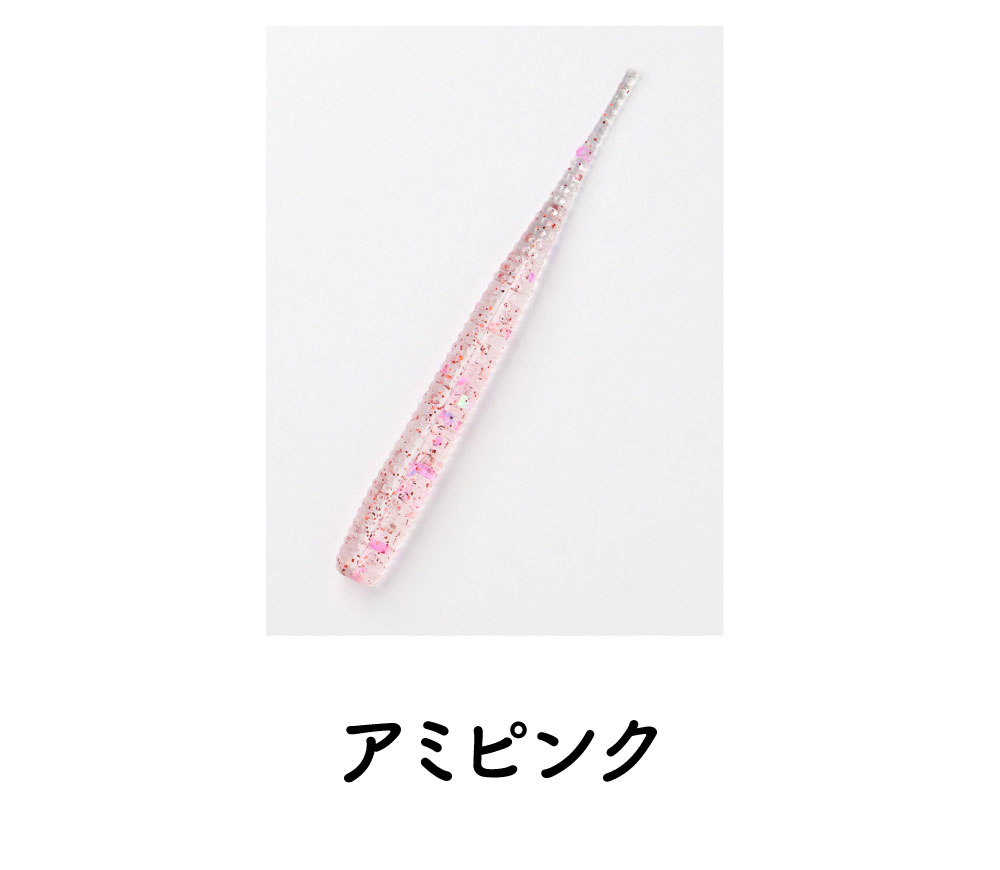
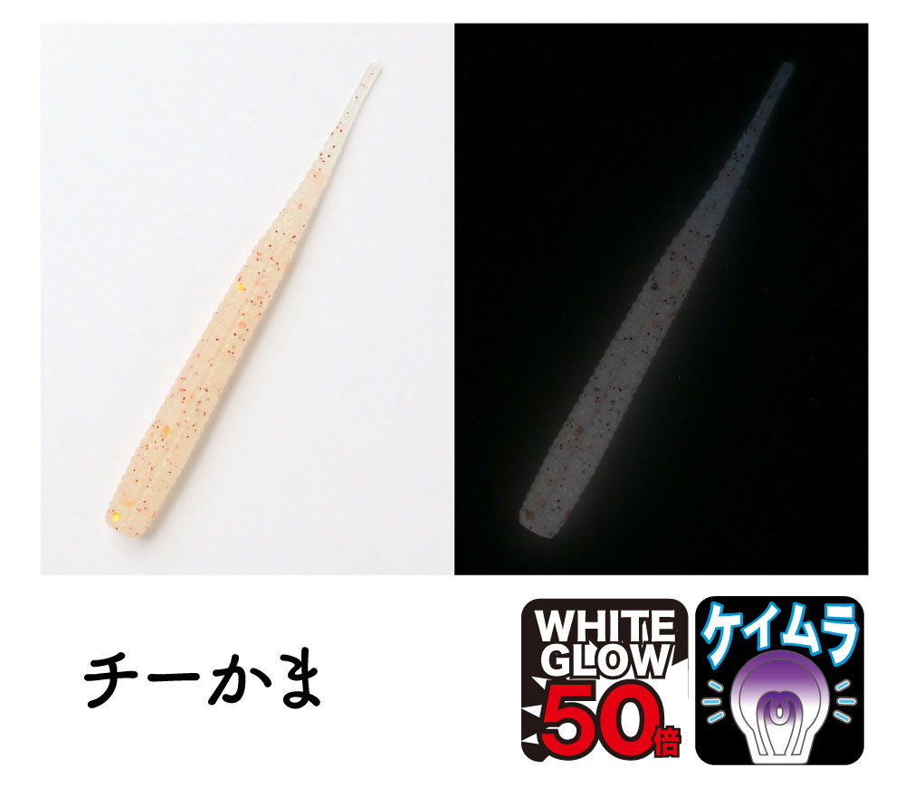
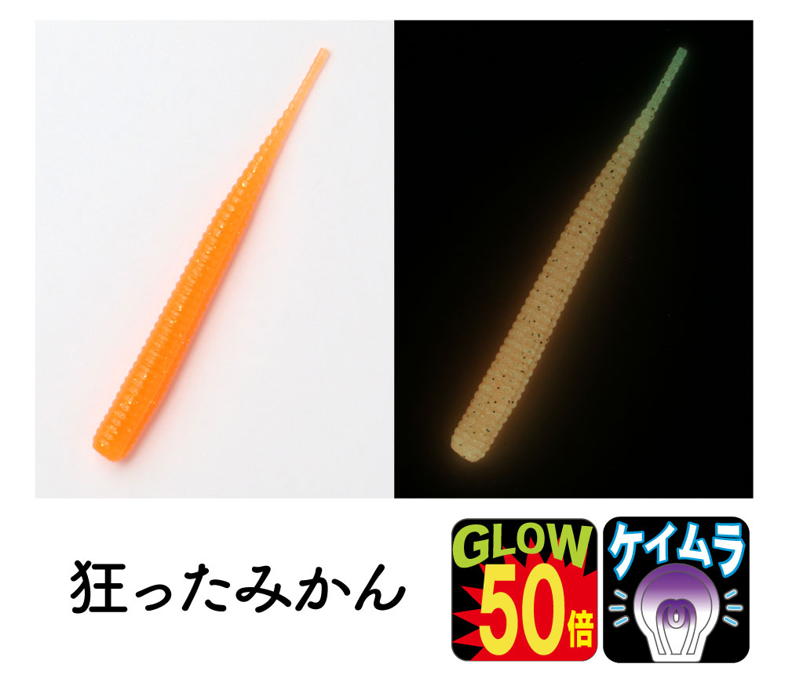
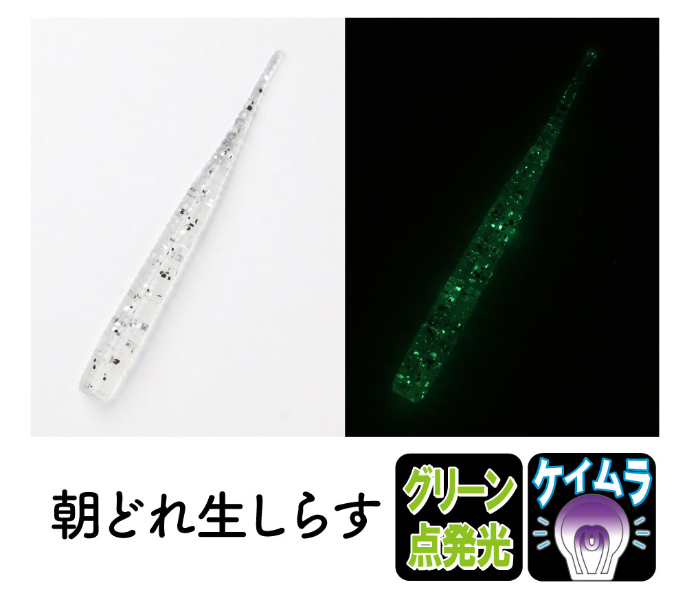

ミゾーン2.0
ミゾーン2.0はClearBlue（クリアブルー）のアジング用ワームです。
廃盤になった「アジボーン2.2」に代わる2インチのリブ系ワームとして開発された、微振動系の浅リブピンテール。両サイドに掘った深い溝で曲がりやすく、アジの吸い込みのよさを高めているのが最大の魅力です。

画像出典:クリアブルー公式HP
スペック
- メーカー
- ClearBlue（クリアブルー）
- タイプ
- ワーム（ジグヘッドリグ）
- サイズ
- 2.0インチ
- カラー
- 全8色＋アソートパック
- ターゲット
- アジ・メバルなどライトゲーム全般
▼今すぐチェック

ミゾーン2.0の特徴
浅リブの微振動と深い溝で、吸い込みのよさを追求した2インチ
-
浅いリブが水流を受けて微振動
細かなピッチの浅いリブが水流を受けて、微振動系のアクションでアピール。動きすぎず、テールの先が細かく震える。
-
両サイドの深い溝で曲がりやすい
左右2か所に深い溝を掘ることで、柔らかく曲がりやすい。曲がる方向で硬さが変わる設計で、アジの吸い込みのよさもアップしている。
-
軽いジグ単でも存在感
リブと溝で表面の層が増え、軽いジグヘッドに付けても存在感が出る。シルエットはスマートなまま、アピールを足せる。
ミゾーン2.0の使い方
ジグヘッドの鈎先を溝の部分から出すと、まっすぐ刺しやすくなります。キャスト後はただ巻きやスローなリフト&フォールで、浅リブの微振動を活かして誘うのが基本です。
刺す向きで硬さが変わる設計なので、反応を見ながら刺し方を変えてみるのもアリ。同じクリアブルーの「セクシービー」とローテーションする前提で作られています。
ミゾーン2.0の得意な状況
アジが小さなベイトやアミを食べていて、動きの強いワームを嫌う状況が出番。
ピンテールの静かな動きにリブの微振動を足したい時や、常夜灯まわりのスレたアジに口を使わせたい時に選びたい1本です。
吸い込みがよくバイトを弾きにくいので、ショートバイトが続く日でも釣れる場面が増えます。
ワンポイント
開発では「動き過ぎず、テールの先が微振動」する動きを狙って調整されています。巻きスピードを上げすぎず、テールが震える程度のゆっくりした速度をキープするのがコツです。
カラーはグロー入りやケイムラ入りもあるので、常夜灯の明るさや時間帯で使い分けましょう。
人気カラー
ミゾーン2.0は全8色＋アソートパックの展開。その中から人気カラーを紹介します。

アミピンククリアにピンクと赤のラメが入ったアミカラー。アミパターンの基準に。

チーかまホワイトグローとケイムラ入りの淡い色。暗い場所でもやさしく存在感を出せる。

狂ったみかんオレンジにグローとケイムラ入り。濁りや反応が落ちた時のアピールカラーに。

朝どれ生しらすクリアにラメのしらすカラー。グリーンの点発光とケイムラ入りで、小魚パターンに。
画像出典:クリアブルー公式HP
▼今すぐチェック
ミゾーン2.0に似ているルアー
-
 月下美人 アジングビーム2.0
ダイワ
詳細はこちら＞
月下美人 アジングビーム2.0
ダイワ
詳細はこちら＞
定番形状にエビ粉コアを入れた2インチ。ニオイと味で食わせたい時に。
-
 マギア2.1インチ
エーテル
詳細はこちら＞
マギア2.1インチ
エーテル
詳細はこちら＞
同じリブ系の2.1インチ。逆リブの強い波動でアピールしたい時に。
-
 ドライブS.AJ
レイン
詳細はこちら＞
ドライブS.AJ
レイン
詳細はこちら＞
リブ付きの2インチ。テールの膨らみで動きを出したい時に。